An open exchange for the MATLAB and Simulink user community
Why do I receive the following error: MathWorks Licensing Error 8 A licensing error occurred while trying to use <PRODUCTNAME>. The license file in use is invalid. Activate your license to get a new license file. kA0i00000007kqYCAQ 000003827
1
answer
NVIDIA has recently introduced a Synthetic Data Generation (SDG) workflow for traffic scenarios, enabling the creation of photorealistic synthetic traffic videos using Cosmos models, such as Cosmos Reason 1 and Cosmos Transfer 2.5. This SDG workflow requires two primary inputs: Maps: 3D road netwo...
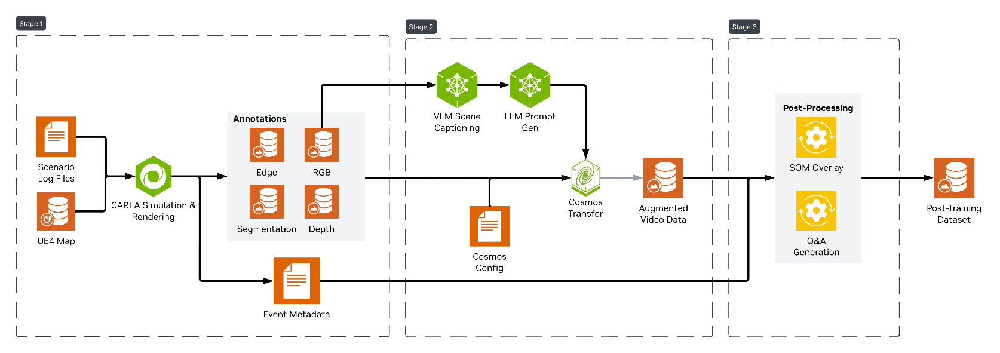
Today's guest blogger is Rikin Mehta. Rikin is a Software Engineer on the Database Toolbox team at MathWorks. In this post, he shares the story behind engineering the ORM Skill for the MATLAB Agentic Toolkit, from discovering where agents struggle to building something that actually fixes the pr...
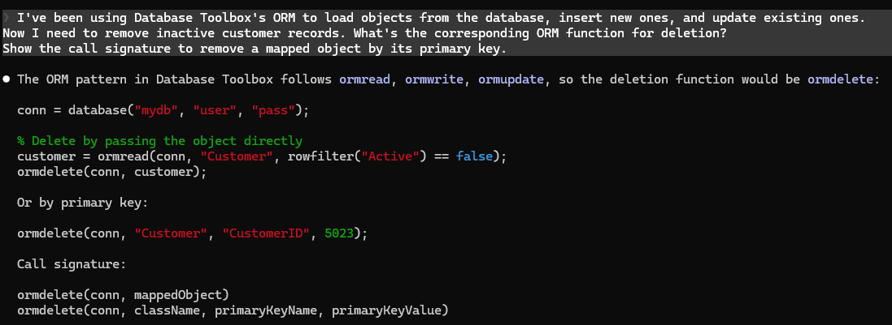
Today's blog post is written by Veer Alakshendra, Education Technical Evangelist on the Student Competition team at MathWorks. In this blog he talks about how to model and simulate an electric vehicle using MATLAB and Simulink. Introduction Modeling is a way to create a virtual representation of...
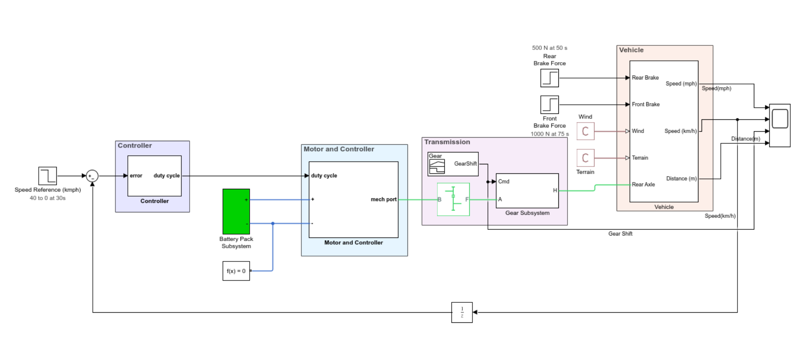
In today’s blog, Abhishek Shankar from the Student Programs team at MathWorks introduces a newly released underwater RoboSub simulation environment built with Simulink, Simulink 3D Animation, and Unreal Engine that enables teams to test algorithms and accelerate development. Over to you, Abhishek....
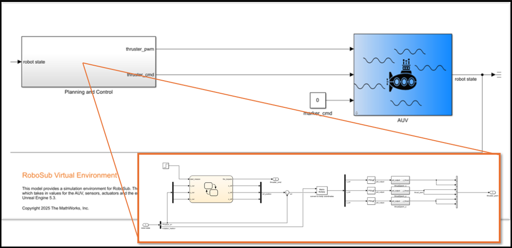
Simulink model of a self-parking vehicle
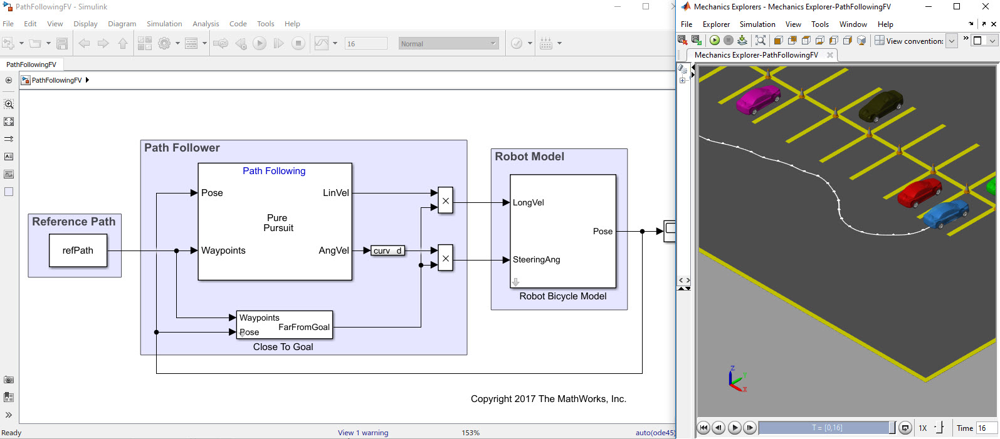
This toolbox is used to represent the kinematic diagram of any robot using both solid 3D frames and solid links.
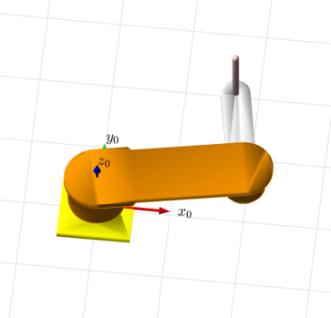
Voltage Controlled DC/DC Bidirectional Converter, multiple Simulink version is uploaded
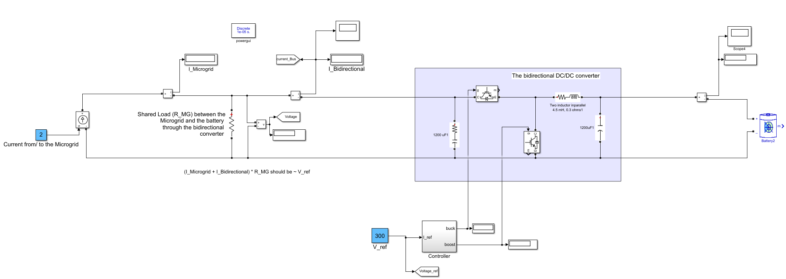
Basic Mathematic Modeling and Close loop Speed Control of Separately Excited DC Motor
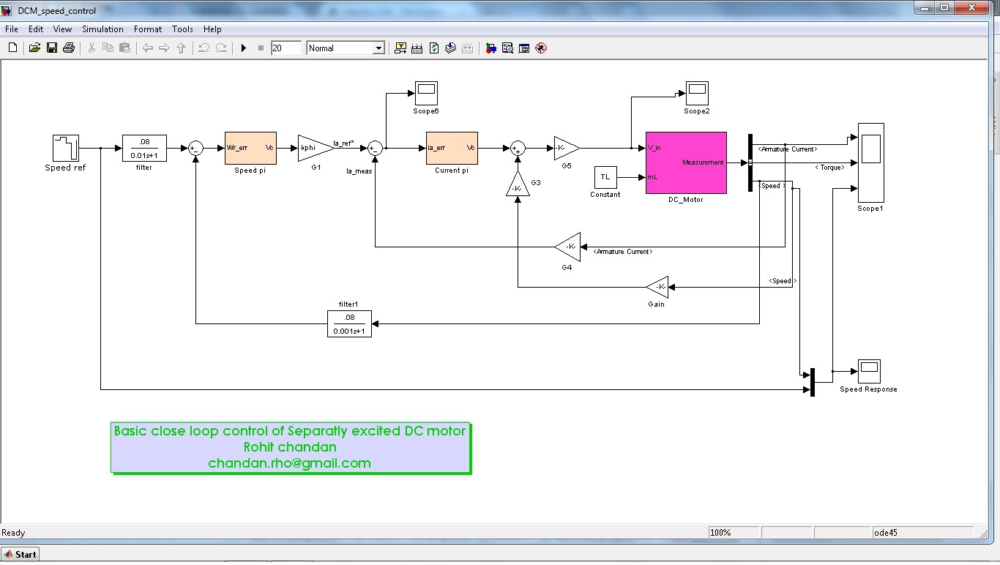
Mobile Robotics Training library and Simulation Map Generator app for the training video series.
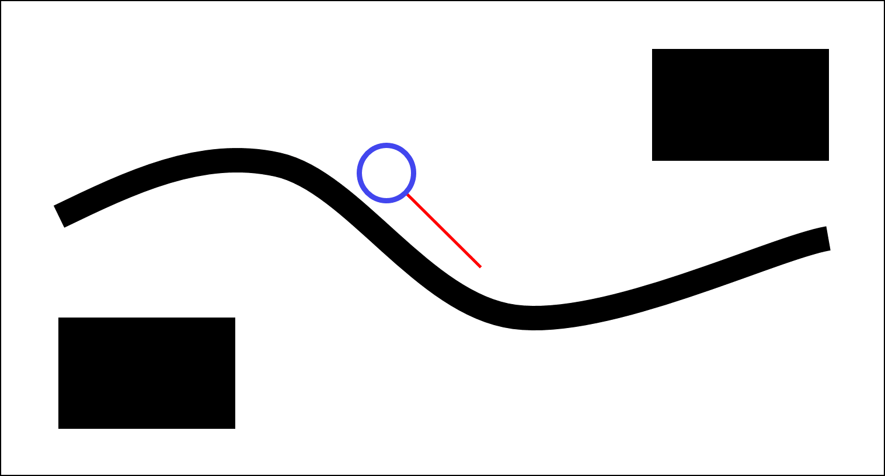
A Practical Guide to Git in MATLAB The Problem You Already Have You know the folder. Somewhere on your machine there is a directory that looks like this: A familiar sight: version history encoded in file names Every economist who
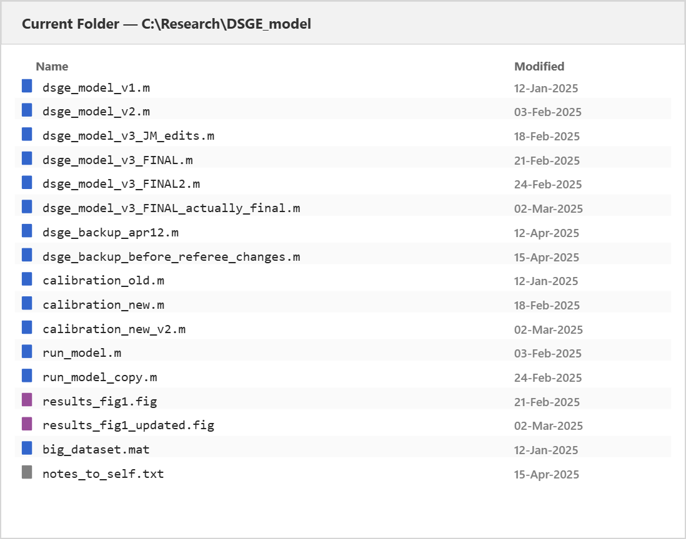
One of the best improvement of the Grey Wolf Optimizer
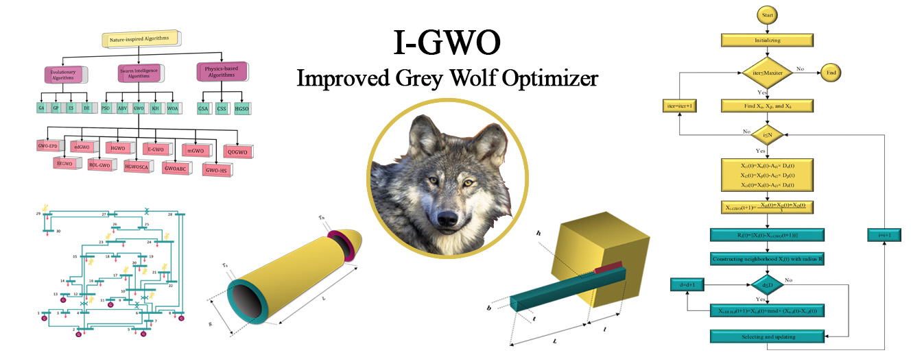
Tracks MPP of the PV system using P&O Algorithm
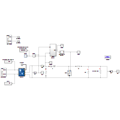
SSA is a novel algorithm for solving single-objective optimization problems
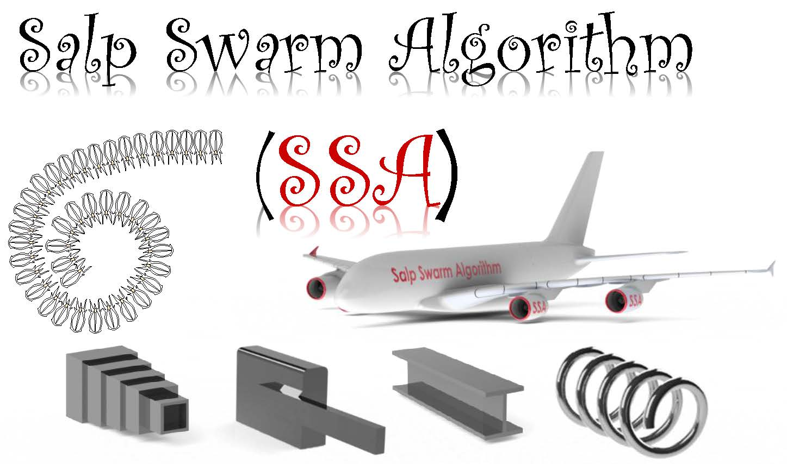
Co-author: Brian Douglas Brian is a Technical Content Creator at MathWorks and control engineer with over 20 years of experience in the field, and a passion for sharing his knowledge with others. He creates and posts engaging videos, drawings, and short writings on various engineering topics....
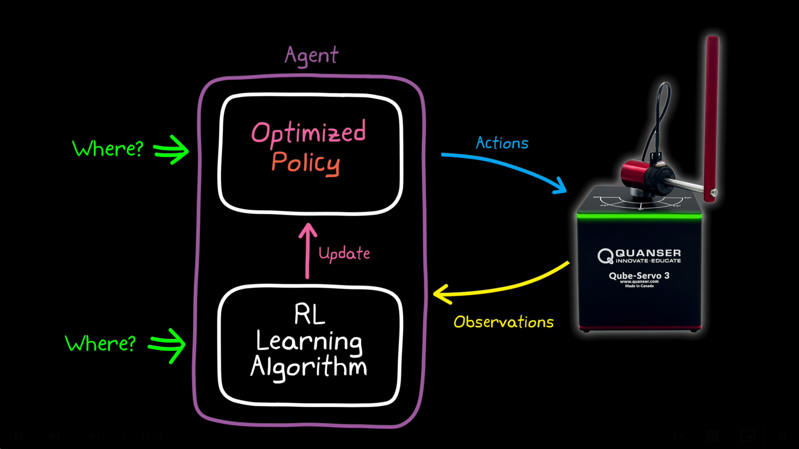
For this week’s blog post, we invited the DuBois Area Robotics team to share their journey and how they used MATLAB and Simulink for the 2025 BEST Robotics Championship. MathWorks is immensely proud of their achievements, and we hope you also find their insights useful! With that, I’ll hand it ove...
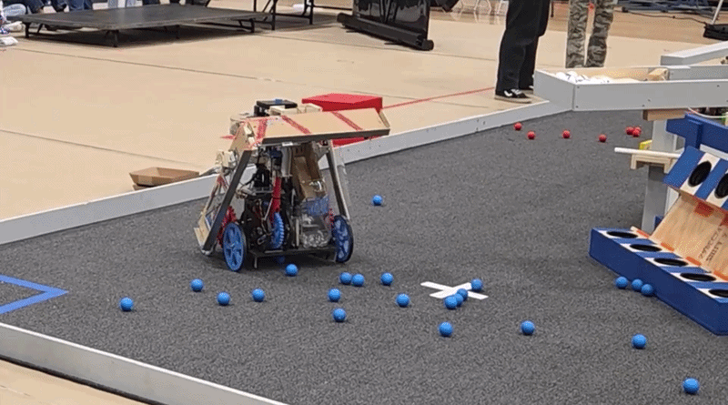
I've been a user of Python for almost as long as I've been a user of MATLAB and am very comfortable with both ecosystems. As such, I have been delighted with the steadily improving interoperability between the two languages. It is extremely easy to call MATLAB code from Python and Python cod...
How do I skip items in legend? Say I have 6 plots with 3 actual values and 3 interpolated curves. I only want to label the actual value curves so legend('first','','second','','third') doesn't really work because the interpolated curve still shows. kA03q0...
14
answers
When installing MATLAB manually without the Internet, I provided the File Installation Key provided by the MathWorks. When I enter the File Installation Key the installer tells me that it is invalid. How can I install my MATLAB manually without the Internet? kA0i00000007qbOCAQ 000025941
1
answer
Resources for getting started with MATLAB and Simulink and the Robot Operating System (ROS).
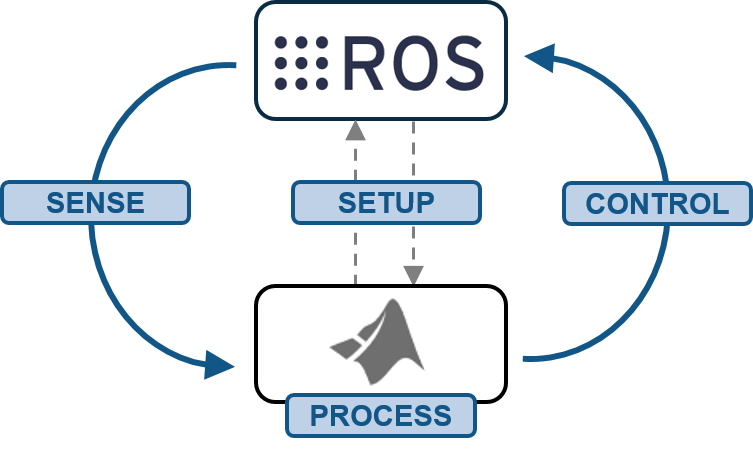
Basic DC-DC converters in form of circuits
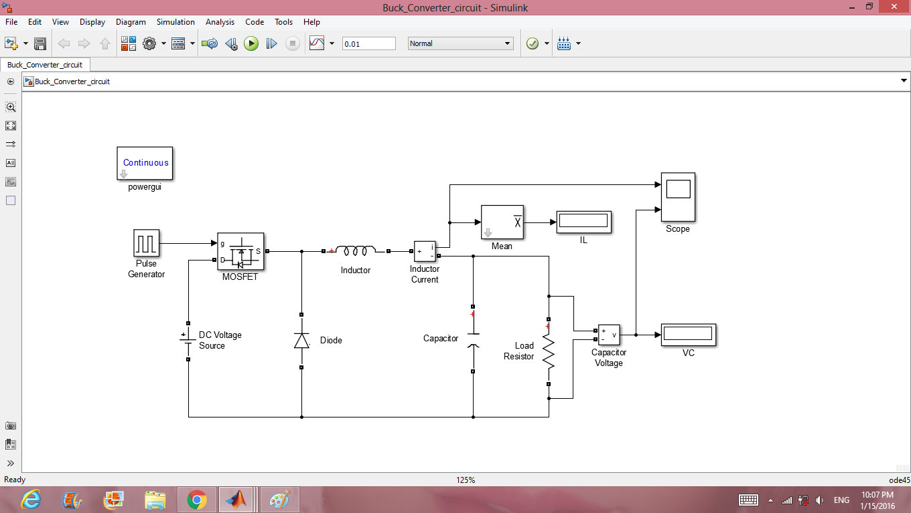
Most Simulink models use workspace variable to define the important parameters. For example, setting the gain value to K and then defining K in the workspace. I wrote about initializing these parameters in the base workspace in a recent post. Have you ever noticed that there are many sources for ...
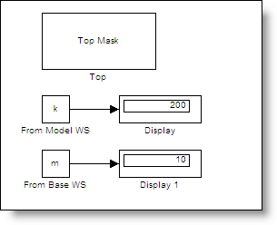
The MathWorks Cambridge office hosted the Europe 2025 edition of the MathWorks Minidrone Competition, welcoming students from universities across Europe. The 2025 edition drew applications from over 40 student teams. Following a structured simulation and evaluation phase, six top performing teams ...
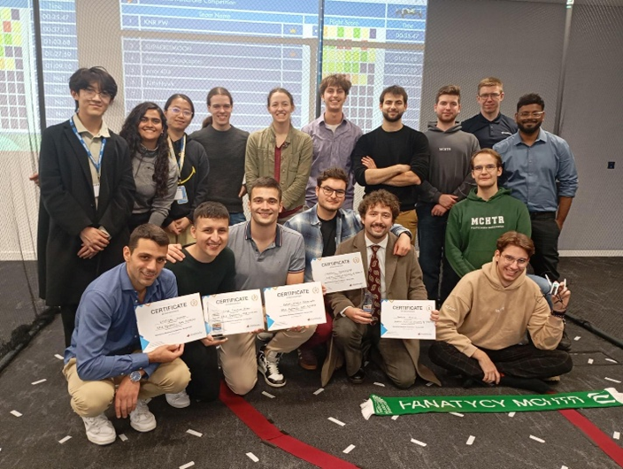
Fireflies on a summer evening, pacemaker cells, neurons in the brain, a flock of starlings in flight, pendulum clocks mounted on a common wall, bizarre chemical reactions, alternating currents in a power grid, oscillations in SQUIDs (superconducting quantum interference devices). These are all examp...
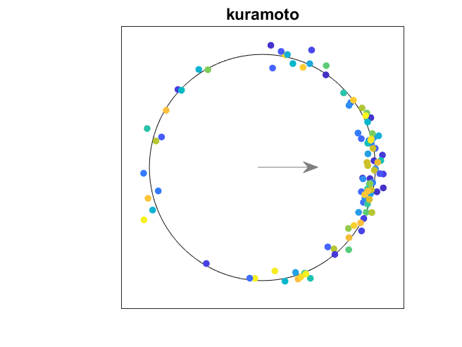
Hello Matlab community! I'm a begginer at Matlab, and I was given a project to complete. There's a few more steps to it, but right now I'm a little stuck on one particular part. I'm trying to read variables and their values from an easily readable csv file. It needs to be easy to re...
3
answers
I already have MinGW on my computer. How do I configure it to work with MATLAB? kA031000000wp0XCAQ 000081184
3
answers
We Simulated a 100 kW PV system connected to utility grid by a 400v/25kv D-Y Transformer Using three cascaded PID controllers
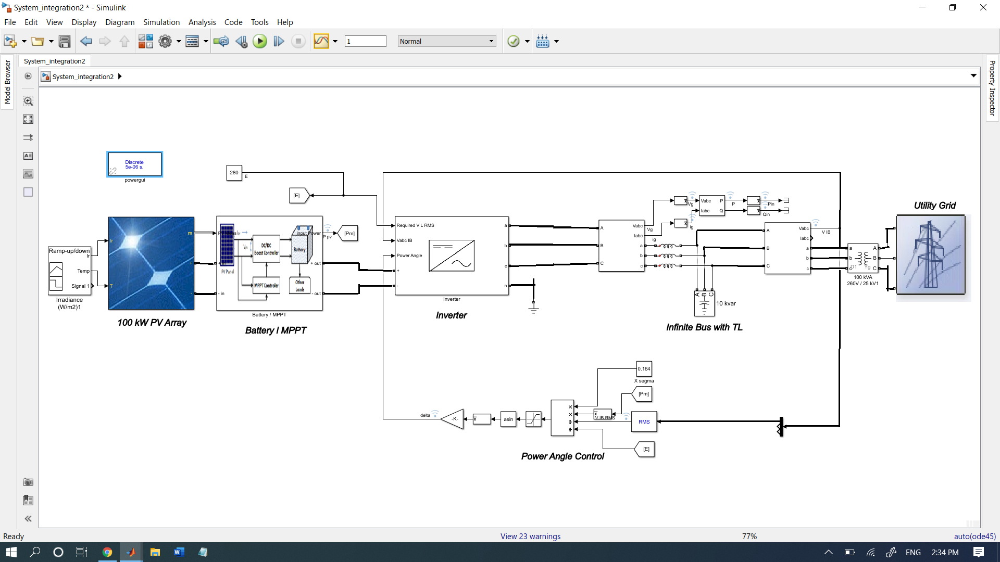
A Matlab/Simulink Library for the Interval Type-2 Fuzzy Logic Systems (IT2-FLS)
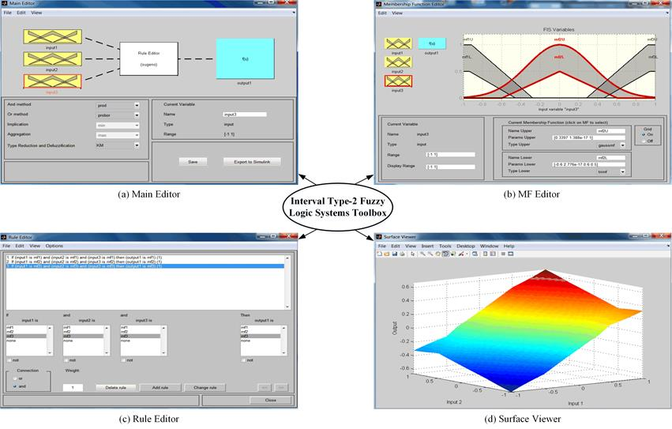
MATLAB R2025a has some great news for Apple Silicon Mac users: Apple Accelerate is the default BLAS. Since Apple Accelerate makes use of various hardware features in Apple Silicon CPUs, this means things like matrix-matrix and matrix-vector multiply are much faster. So I wondered....would this lead...
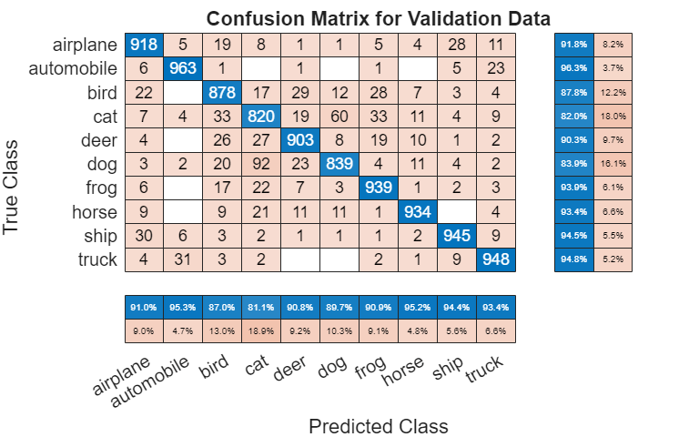
This program calculates and plots psychrometric properties of moist air in SI units between -60 to 90 C
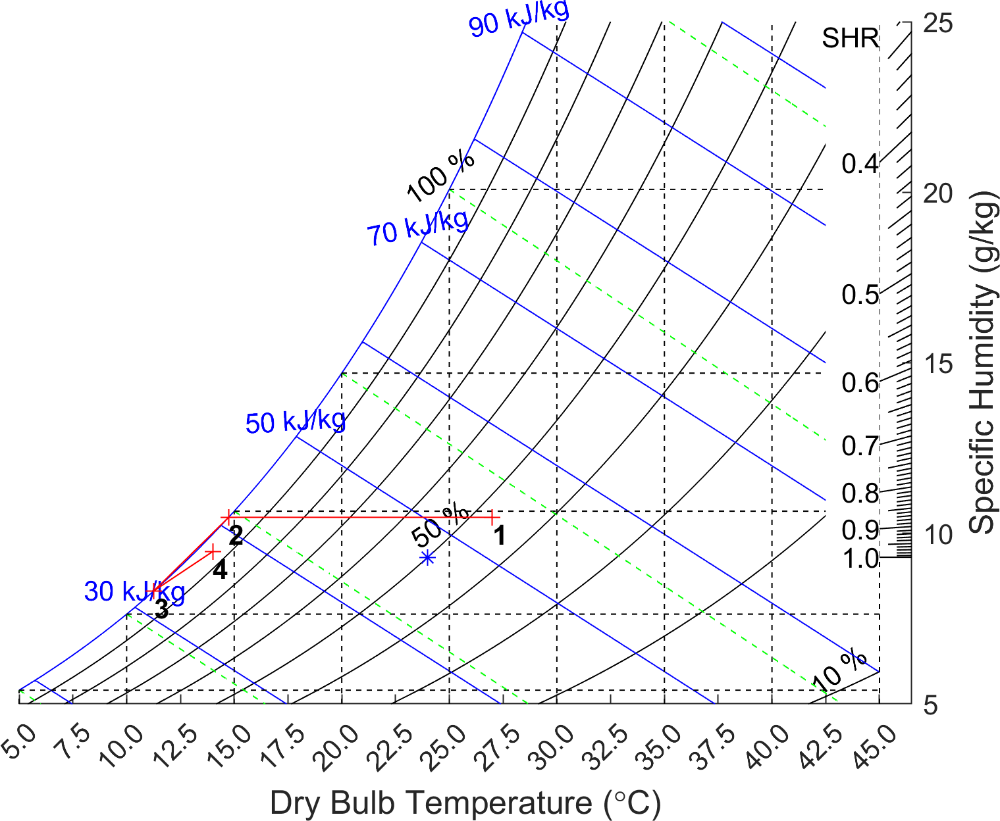
We've had a fantastic year with new and improved features in MATLAB R2009a and R2009b. Let's take a walk down memory lane... On the MATLAB desktop 2009 was a big year for our power users. R2009b introduced customizeable keyboard shortcuts. Many actions from simple open, new, cut, and copy to...
In today's blog, Khushin Lakhara from the Student Programs team at MathWorks will explore the concept of sensitivity analysis and its significance in engineering design. Over to you, Khushin... For this blog, our attention will be on the student competition score function, especially competiti...
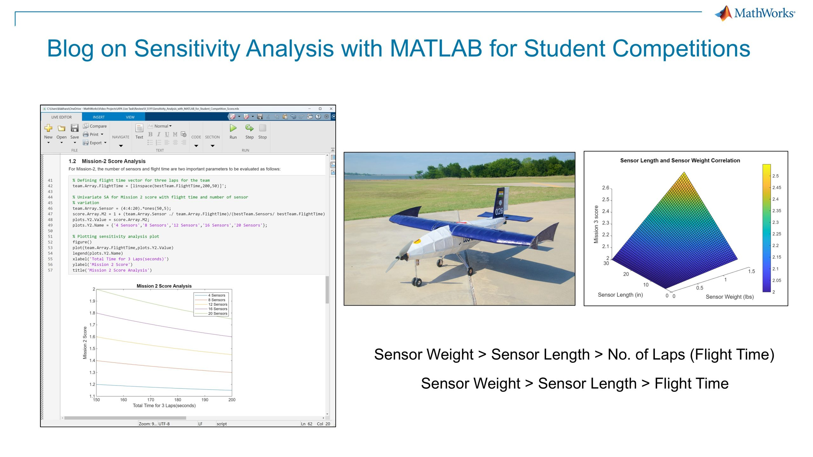
Quick and dirty MatLab function for Julia and Mandelbrot Sets
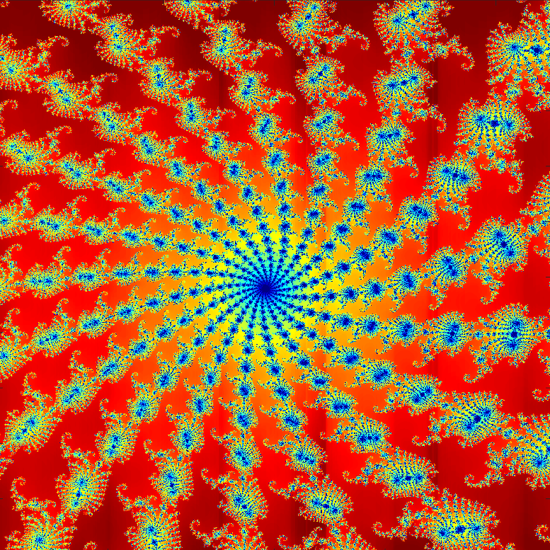
In my previous post, I introduced an example I recently published on MATLAB Central: Four-Cylinder Engine Ignition Control Simulation. After describing how the plant model has been implemented, it is now time to describe how the controller is implemented, and how the overall system is simulated. The...
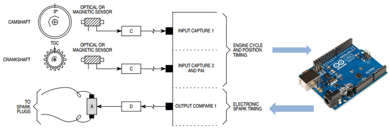
Jiro's Pick this week is spider_plot by Moses.There are quite a few "spider plots" on the File Exchange, but this one by Moses caught my attention for a few reasons.Moses includes a detailed help inside the function.help spider_plot spider_plot Create a spider or radar plot with indiv...
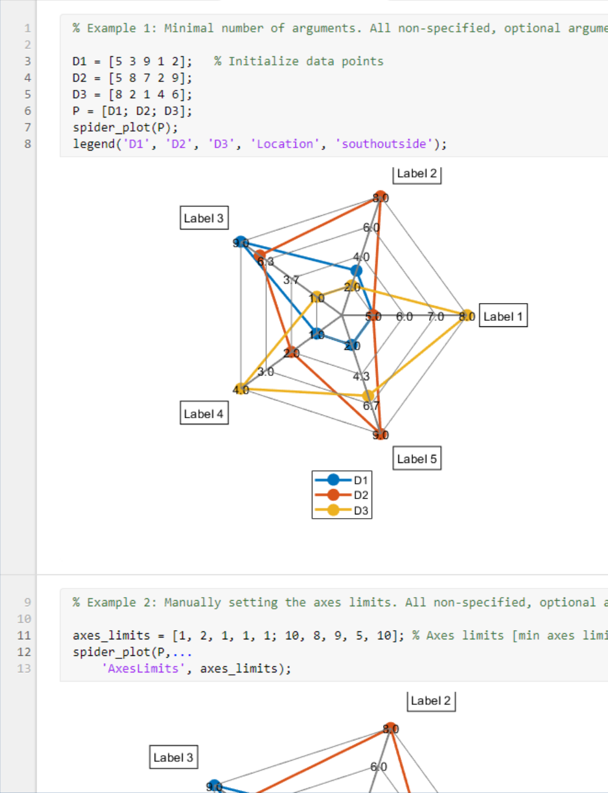
There is a new way to work with textual data in MATLAB R2016b. The new string datatype haven't got enough attention from me until recently. I have been chatting with colleagues Matt Tearle and Adam Sifounakis and we have each discovered a similar beautiful code pattern in MATLAB for generating a...
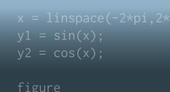
Drive your TurtleBot and acquire sensor data.
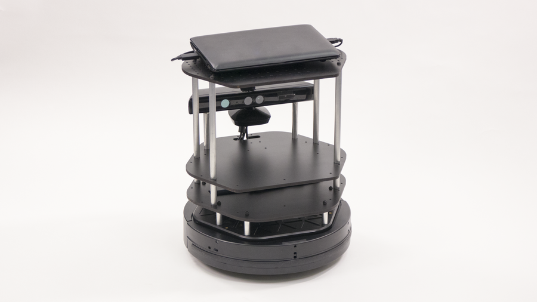
How do I add or remove an end user on my License? kA0i00000007kypCAA 000004337
1
answer
Why I do receive the error message below when I try to launch MATLAB? Unable to communicate with required MathWorks services (error 5003). For help, contact MathWorks Support. OR Unable to communicate with required MathWorks services (error 5010). For help, contact MathWorks Support. ...
1
answer
I'd like to welcome guest blogger Chris Kollett this week from the MATLAB Help team to talk about the redesigned Help Browser. If you're a regular user of the Help browser, you'll notice that its user interface has changed quite a bit in R2009b. One of our main motivations for these ch...
A structured implementation of Covariance Matrix Adaptation Evolution Strategy (CMA-ES) in MATLAB
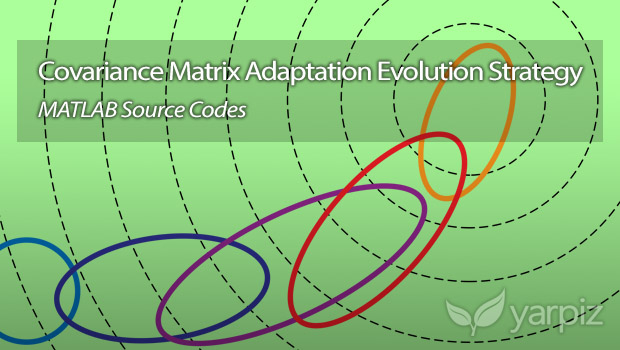
I want to show how works heuristic algorithm. I have my cost function and i want show every step of algorithm. For example i have cod: load franke sf = fit([x, y],z,'poly23') subplot(1,2,1) plot(sf) subplot(1,2,2) X=x(10:15) Y=y(10:15) Z=z(10:15) plot3(X,Y,Z,'-mo') grid on How to sh...
1
answer
The R2015b release contains some new features for individual axis customization. Ben Hinkle, who works with the graphics team sometimes, goes through a number of plotting scenarios where these features can help simplify your code. This post shows some nicer techniques for making these pretty plots u...
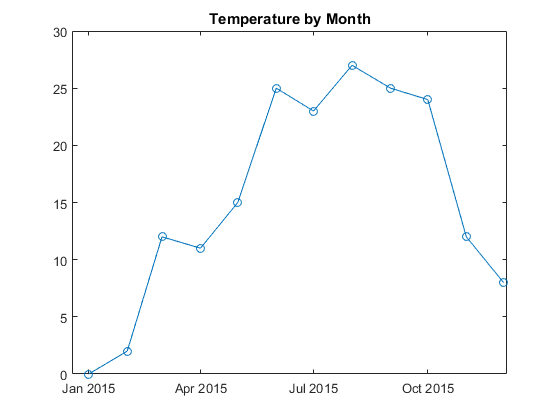
How can I download 2011b version of MATLAB?
6
answers
Pentagonal Numbers Your function will receive a lower and upper bound. It should return all pentagonal numbers within that inclusive range in ascending order. Additionally, it should return an array that indicates those numbers that are divisible by 5. For example, [p,d] = pentagonal_numbers(10,40)s...
Progress monitor for matlab parfor (parallel) loops with estimation of the remaining time
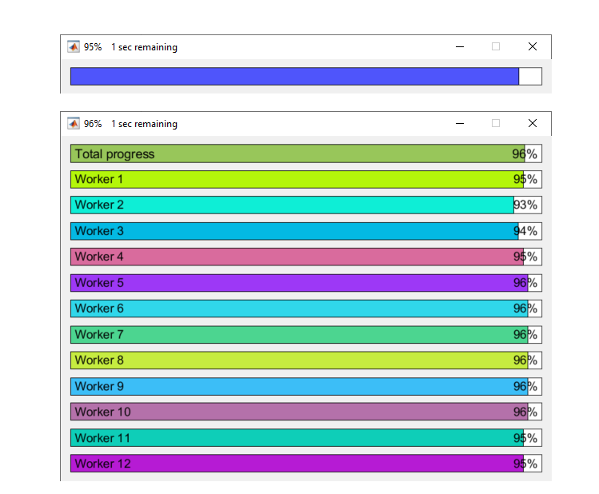
Hi everyone how can I delete element from vector .... for example a=[1,2,3,4,5] how can I delete 3 from above vector to be a=[1,2,4,5] thank you majid kA03q0000015JgHCAU 000178401
8
answers
I've been using the linear analysis toolbox quite a bit lately for generating linear models within simulink. >> Tools / control design / linear analysis.. For some reason the models generated are generally discrete. I appreciate that their are a few functions for shifting between discrete...
1
answer
We will have a two-part minisymposium on "Bohemian Matrices" at ICIAM2019, the International Congress on Industrial and Applied Mathematics in Valencia, Spain, July 15-19. This is an outline of my talk.
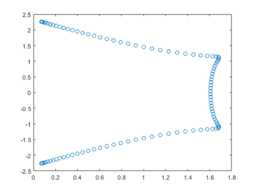
© kreutzweise.de Great ideas don’t always stand the test of time. It may be due to some drawbacks that knock out the great advantage, or it simply is too expensive or difficult to implement. The following article will share a contradicting example. Enjoy this engineering success story of originalit...
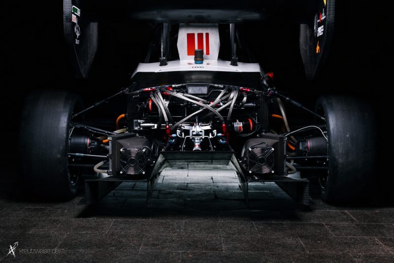
IDEAL BOOST CONVERTER SIMULATION
From my understanding, MATLAB is able to search for a string of characters that is associated to a numeric value as long as it is in a table format from within a .docx file. However, I am wondering...
0
answer
We use Timecontrol for statistic automations. Yesterday at 2026-10-220 10:00pm CET Time control stopped working. There is new new time in the "Run At" field, although the script should run every 5 minutes. We had the same problem in September, see ...
4
replies
I`ve downloaded my channel data to make a correction in one entry, cleared the channel, and when I tried to upload de csv file to reload de feed, it does not work, channel remains empty
1
answer
Interactive MATLAB tour of VAEs: Gaussian posteriors, reparameterization, the ELBO, the beta trade-off, and digit and face latent spaces.
All my thingspeak channels has stopped receiving data at 3.00am this morning. Is there any problem with Thingspeak?
0
answer
MATLAB implementation of Effort-to-Compress (ETC), normalized ETC, and composition-normalized ETC.
An interactive MATLAB app for constructing virtual DC circuits, visualizing voltage distribution, and verifying Kirchhoff's Voltage Law.
In my last post (Collaborative Optimization on the Cody Frontier), I showed how four people, ostensibly competitors in a Cody competition, came to collaborate on a tricky problem. The storyline there was that Cody rewards you for writing the shortest possible code. All improvements are welcome, whet...
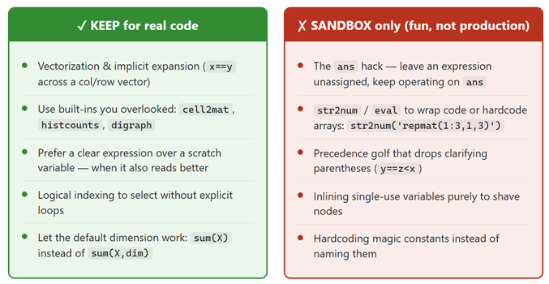
MATLAB Online opens normally and runs code, but Save and Save As do nothing when clicked. No error message appears. MATLAB Drive is accessible. The issue persists across browser refreshes.
0
answer
I want to use Python's numpy, pandas, and statsmodels.api in Matlab 2026b. I added Python using Matlab's Add-ons; i.e., I installed MATLAB Support for Python 3.13. Then, I tried the following: e = pyenv; e.Version e.Executable e.Status e.Version gave "3.13"; e.Executable gave &...
0
answer
I have been supporting users of Simulink and Simscape for many years. During this time, I built up in my head a list of best practices that I systematically go through when I receive new Simscape...
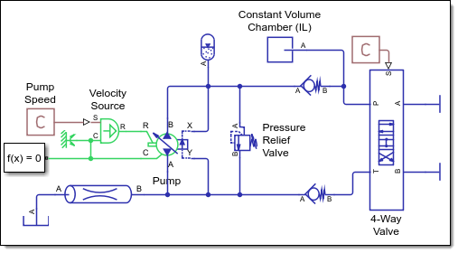
When we launched Digital Engineering De-coded, our goal was simple: move beyond buzzwords and share practical patterns that help engineering teams solve real problems. This four-part series follows VIPR-GS researchers Tanmay Samak and Chinmay Samak as they reflect on their work developing and valida...
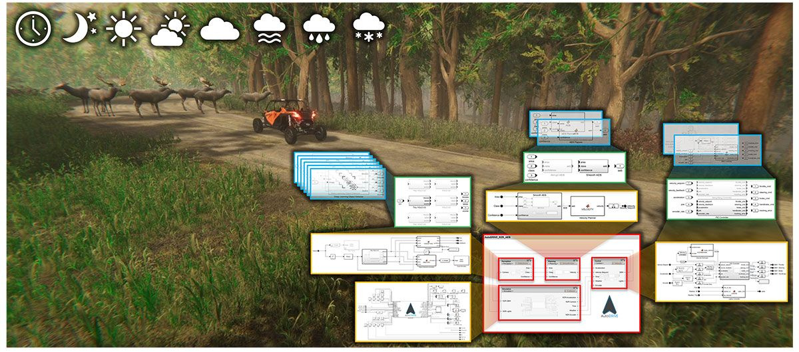
The new installer streamlines the process of installing and setting up agentic workflow with MATLAB. If you have been intimidated by the setup process, give this a try! MATLAB Agentic Toolkit Installer shipped
0
reply
UOS Robotics from the University of Seoul returned to the RoboCup ARM Challenge in 2026 after winning titles in 2022 and 2023. With RoboCup 2026 held in Incheon, South Korea, the team took first...
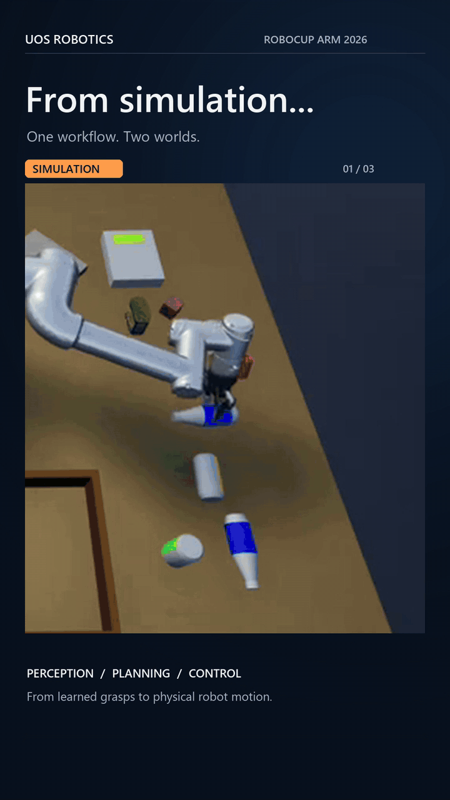
As part of last week's MATLAB Expo in the UK, MathWorker James Drummond was given the task of creating the table centrepieces. They were modeled in Blender with the help of Codex (GPT-6 Astra), connected through the Blender MCP. Here's one of the Blender renderings:There was plenty of trial ...
I am frequently facing issue with the onramp training of not proceeding to the next task or section, even after successfully completion of the current task or complete section. Challenges during online trainings Hi Pooja. I'm sorry for the issue you are facing. There is a troubleshooting sess...
1
reply
Agentic AI is changing how engineers work. Join Jason Ghidella to see how AI agents can help accelerate coding, modeling, requirements generation, testing, and validation with MATLAB and Simulink, while maintaining the rigor needed to trust the results. See real-world demonstrations spanning app ...
0
reply
For the past several days I have been experiencing a problem with data visualization on two of my ThingSpeak channels. The data appears to be uploaded and stored correctly, and new entries are still being added to the channels. However, the visualizations are not working correctly. The standard F...
7
replies
for x as the input = [ 879 824 326 753]then output y sould be =out=[0 0 0 0 0 ...
Write a function scaled_mat = standardize_columns(A) that standardizes each column of a 2D matrix A using z-score normalization. %% Test 1: Standard matrixA = [1, 10; 3, 20; 5, 30];expected = [-1, -1; 0, 0; 1, 1];assert(max(abs(standardize_columns(A) - expected), [], 'all') 1e-6);%%...
Your task is to write a function that takes a set of statistical metrics and generates a vector 'x' of integers that satisfies these statistical metrics.Input Arguments:n - Number of elements...
Today's guest blogger is Rikin Mehta. Rikin is a Software Engineer on the Database Toolbox team at MathWorks. In this post, he shares the story behind engineering the ORM Skill for the MATLAB Agentic Toolkit, from discovering where agents struggle to building something that actually fixes the pr...
Convert Specialized Power Systems models into Simscape Electrical models
Learn how to design modern data centers by specifying server rack layouts, power ratings for typical power system and HVAC analysis.
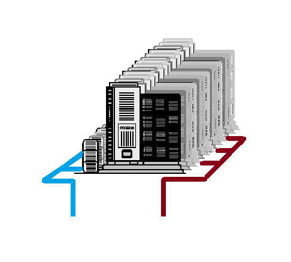
My various social media feeds are full of discussion of the September "Back-to-school" reset. I feel it too, even though it's now 30 years since I started my undergraduate physics degree at The University of Sheffield. I have the urge to declutter, buy new stationery and, of course, up...
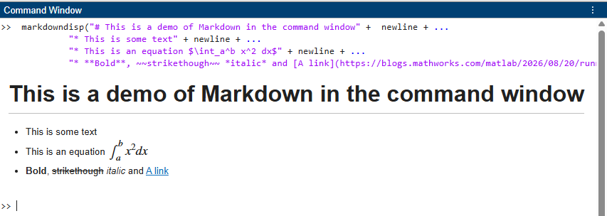
MATLAB R2026b is now available. Here are my favorite enhancements.Published Referenced ModelsIn R2026b, you will notice a new Publish button in the Simulink toolstrip:When publishing a model, a new SLXP file is created. This file contains a precompiled, ready-to-run version of the model. As a result...
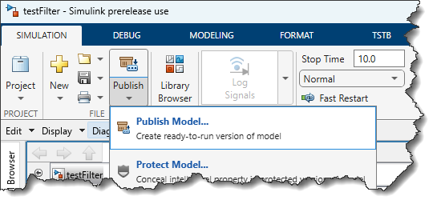
Embedded system terminal for MATLAB
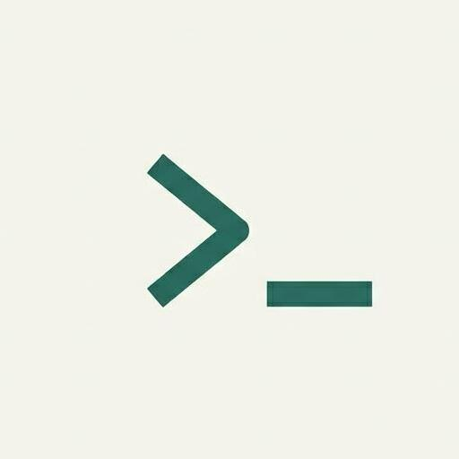
This blog post is co-authored with Akshay Paul, the product manager for the new MATLAB MCP Core Server that released on Friday 31st of October on GitHub: github.com/matlab/matlab-mcp-core-server The AI Copy Paste problem If you are like me, you are probably familiar with this situation. Going to yo...
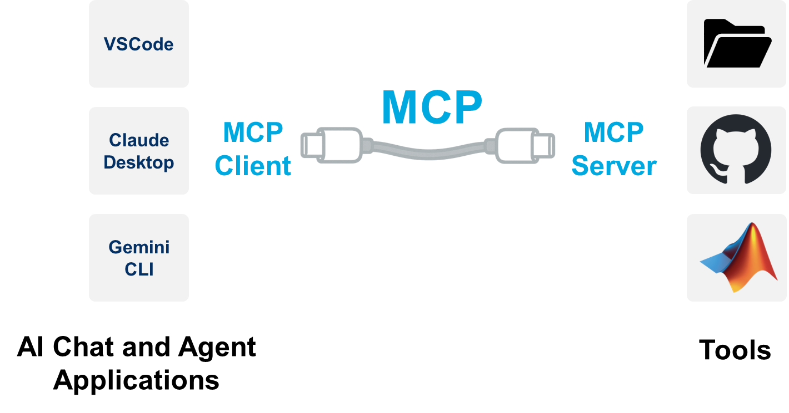
According to the documentation, p = randperm(n) returns a row vector containing a random permutation of the integers from 1 to n without repeating elements. You've just installed MATLAB and opened a fresh session. What is the result of randperm(10) A question of randomness randperm(10) rng(&q...
11
replies
In today’s blog, we have Ben Pasquariello from the Student Programs team at MathWorks. He’ll walk us through some helpful MATLAB resources and tips for getting started.Over to you, Ben... Hi...
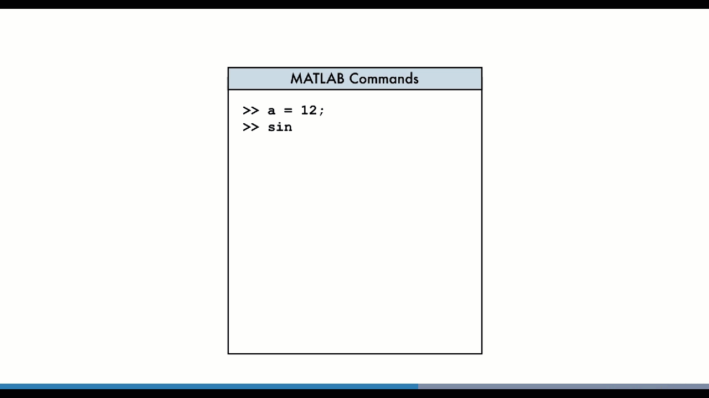
2032057^3 + 3979152^3 == 4148490^3 ans = logical 1 What is the explanation for this result? I'd sharpen the explanation a bit by adding that MATLAB is, in fact, wholly correct: it's just that the operations ^ and + aren't the usual mathematical operations that we think they are, based...
13
replies
Install Python 3.13 for MATLAB
What is the result of y = 0.2 0.3 0.4 What is the result of y = 0.2 0.3 0.4 Interesting. I had not expected this split (for posterity in case it changes: 43/47/0/10%). The result changes fast....
16
replies
New MATLAB Object Management System - Beta
Introduction MCP is an open protocol that can link Claude and other AI Apps to MATLAB using MATLAB MCP Core Server (released in Nov 2025). For an introduction, see Exploring the MATLAB Model Context Protocol (MCP) Core Server with Claude Desktop. Here, I describe my experience with installation a...
0
reply
s = regexprep('\\\','\\\','\\\\\') numBackslashes = sum(s == '\') How many backslashes will appear in the output text? I gleaned part of the trickiness, but I couldn't decide if the third backslash in the "expression" text (2nd input argument) and the...
2
replies
Write a function that takes a number x as an input and returns the same value as y, unless x = 5, in which case the function should return 0. %%x = 1;y_correct = 1;assert(isequal(a_five_introduction(x),y_correct))%%x = 55;y_correct = 55;assert(isequal(a_five_introduction(x),y_correct))%%x = 5;y_...
Given a vector A, return vector B with all 5s replaced with 0s. %% Tests for basic, only fives, no fives, negatives, and single elements.A = [1 5 3 5];B_correct = [1 0 3 0];assert(isequal(dont_include_a_5(A),B_correct))%%A = [5 5 5];B_correct = [0 0 0];assert(isequal(dont_include_a_5(A),B_correc...
Given a vector A with at least one non-five, return vector B, with all fives excluded (not replaced by zeros). %% Tests basic, no fives, negative five, and fifty-five.A = [1 5 3 5];B_correct = [1 3];assert(isequal(dont_include_a_5_pt2(A),B_correct))%%A = [1 2 3 4];B_correct = [1 2 3 4];assert(is...
Hello, I am running a generator in HIL using the Synchronous Machine pu Standard block. The system operates well at higher real-power levels, but I am experiencing instability when operating at lower real power while supplying positive reactive power (+Q) when connected to a infinite grid voltag...
3
answers
Currently I'm Taking Control Techniques for PMSM (new), at Current Controller Optimization, Implement MTPA and FWC to optimize your controller. I start taking the task, from 1 to 3 all no issues, but...
2
answers
Hello. Suppose I want to handle functions with a dynamic number of outputs, depending e.g. on the count of input arguments and/or the input values. I'd like to capture all outputs in a cell array (or...
3
answers
Hello everyone, i wanted to start Simscape Battery Onramp but an error appears when i run the model for the first task, which is simply pluggin in "BatteryPack_ChargeLevel" to a scope. (The architecture was already complete for the first task) The error is the following: Error:Multiple...
1
answer
I have created a table in MATLAB which contains columns with decimal places: names = {'Jill';'Jack';'John'}; grades = [.90;.95;.85]; t = table(names,grades) I am looking to convert these columns into percentages, then export the table to ...
1
answer
No Activity
Visit MATLAB Central to get showed in the community and join hundreds of thousands of other members like you